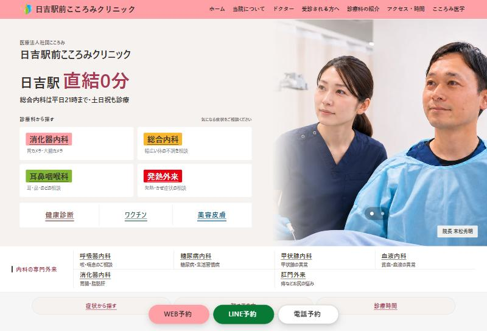

案1
ピンク × 墨（すみ）
ピンクが主役の案です。最寄り駅の電車のピンクをヘッダーと「お問い合わせ」に使い、ボタンやフッターは墨色で引き締めます。
- ヘッダー・お問い合わせの帯・WEB予約：もとのピンク
#FFA0A7（文字は墨） - ボタン・番号・お知らせ・フッター：墨
#34302F - 見出し・「直結0分」・リンク：深いローズ
#A83854 - 最初の画面・うすい背景：グレージュ
#F6F2F0
ピンクの面積：ページ全体の約3%（6月は約12%＝バーいっぱい）
この案でトップを見る